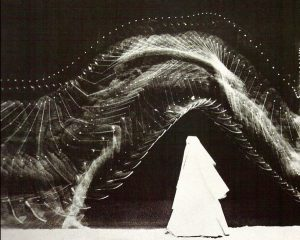
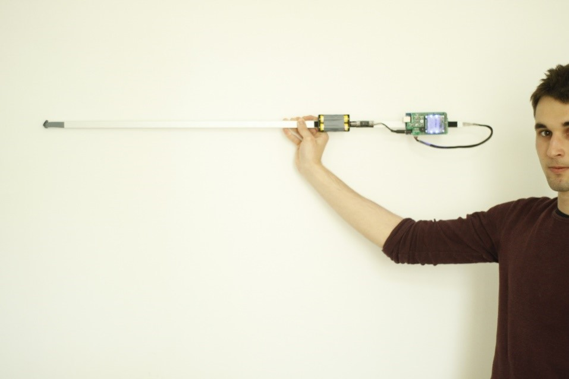
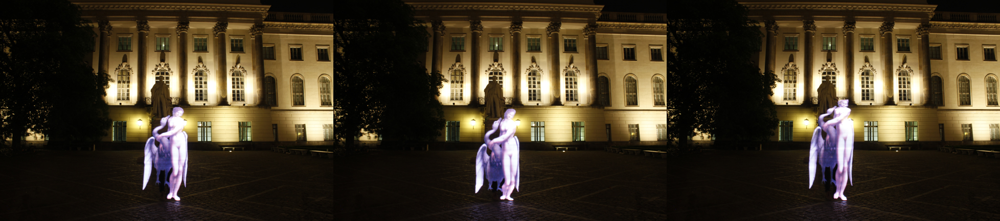
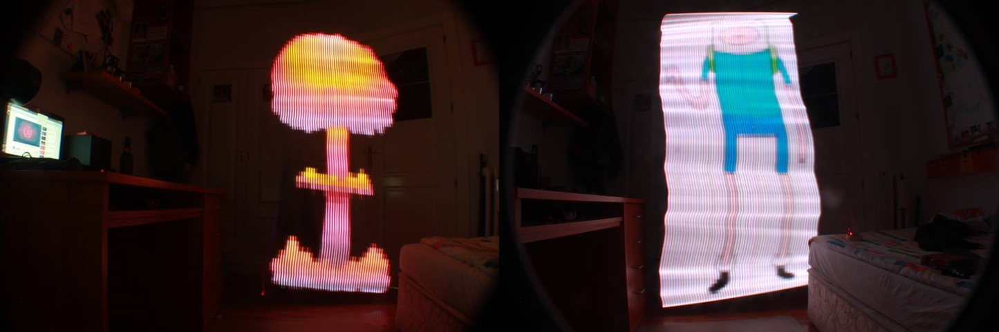

¿Qué es Lightpainting?
El origen de la técnica del Lightpainting está ligado al origen de la fotografía misma. Las primeras placas fotográficas, cuyos químicos eran dramáticamente poco sensibles a la luz, necesitaban de varios minutos para captar una imagen. Estas primeras fotos a menudo resultaban en figuras borrosas que poco recordaban a los clientes retratados. Sin embargo, cualquier lámpara o brillo intruso que recorriese una trayectoria durante la apertura del obturador quedaba inmortalizada en la película con una nitidez insolente.
Etienne-Jules Marey y Georges Demeny decidieron aprovechar esta particularidad para fundar en 1882 la Station Psicologique donde utilizaron distintos ingenios y la primitiva técnica del Lightpainting para estudiar el movimiento humano[1]. La primera imagen que se considera que hizo uso de esta técnica fue esta en la que se estudiaba el movimiento humano durante el salto:

Ilustración 1: Salto de atleta, Etienne-Jules Marey y Georges Demeny (1889)Desde entonces, muchos artistas y entusiastas han desarrollado técnicas y herramientas para llevar el Lightpainting un paso más allá. Esferas luminosas, luces con texturas y distintas plantillas, pero nada tan avanzado como el Lightwand.
¿Qué es el Lightwand?
A través de la tecnología LED, y de las tiras de LED RGB indexables (acceso individual a cada LED) popularizadas por Sparkfun[2], el mismo concepto ha sido desarrollado por distintos desarrolladores de forma independiente. Un Lightwand es una barra de LEDs controlada por un microcontrolador que emite secuencialmente las filas de pixeles de una imagen. Si mientras la cámara hace una foto con el obturador abierto y baja sensibilidad ISO durante unos segundos, el usuario desplaza el Lightwand por el plano, el resultado es una imagen que recuerda a un holograma y que inserta fielmente una imagen en la fotografía:


¿Cómo es?
Esta herramienta se hizo muy popular en Internet debido a un Kickstarter[3] de Bitbanger Labs en el que presentaban Pixelstick[4]. Pixelstick alcanzó rápidamente la cantidad necesaria para su desarrollo y hoy en día es la única opción comercial para hacerse con esta herramienta. Por desgracia, su precio es alto (349$) y vende preferentemente a EEUU. Además, esta herramienta es un producto comercial y por lo tanto no es susceptible a modificaciones o cambios por parte del usuario, estando así limitado a su Firmware y Hardware original.
Pero previo a Pixelstick, Michael Ross[5] -un aficionado americano a la fotografía con educación técnica- ya había publicado en su blog la primitiva versión de su Lightwand. Esta no logró gran repercusión dado que fue pobremente promocionada y resultaba una herramienta aparatosa y en apariencia vulgar (no así sus resultados).
Durante el año pasado, decidí montar un Lightwand para experimentos privados. Tras varias versiones solventando las distintas carencias del Lightwand original de Michael Ross, llevé a cabo el Lightwand Kosmonaut V1 que documenté y publiqué en Github hace unos meses.
Mi objetivo a la hora de desarrollar esta versión era hacerlo barato, ligero y fácil de montar. Para ello decidí usar un Arduino Mega 1280 como microcontrolador y una tira de LEDs Neopixel RGB con 144LED/m. El resultado es un controlador compacto basado en una PCB Shield de Arduino que incorpora una pantalla Nokia 5110 para su manejo y algunas funcionalidades menores como un Buzzer y conexiones externas.
El Lightwand Kosmonaut lee las imágenes almacenadas en una microSD en formato .pnm y las proyecta a través de la barra de LEDs pudiendo el usuario controlar tanto el brillo como el delay entre las filas de pixeles.
Tiene una longitud de un metro (marcada por la longitud de la tira de LEDs) aunque se puede programar para controlar tiras de LEDs de otras longitudes y densidades. Una de las dimensiones de las imágenes proyectadas está por tanto limitada por la tira de LEDs utilizada mientras que la otra dimensión puede ser de muchos metros.


El principal problema que presenta es que el resultado de la foto depende de la velocidad a la que la mueva el usuario, siendo el resultado a veces imprevisible. En la siguiente secuencia se muestran tres intentos en las mismas condiciones pero con evidente distinto resultado.

Posteriormente, la imagen puede mejorarse con ligeras correcciones de brillo y contraste con cualquier programa de edición de foto convencional.
El precio del Lightwand Kosmonaut comprando los materiales a través de Ebay es de alrededor de 70€ (Dependiendo de las fluctuaciones del € y el $), siendo una opción muy asequible y una alternativa viable a Pixelstick para aquellos usuarios con los conocimientos necesarios para montarlo.
¿Cuáles fueron las principales dificultades?
El Lightwand que he desarrollado ha pasado por muchas fases, desde el primer prototipo de 60LED/m cuyo resultado no era ni de lejos aceptable hasta versiones sin PCB aparatosas y poco estables.

Uno de los principales problemas iniciales fue usar el Arduino UNO, con una limitadísima SRAM que no era capaz de implementar las herramientas de la librería Neopixel junto con el control de la pantalla Nokia 5110 y la lectura de la tarjeta microSD (Que carga en SRAM el archivo leído, siendo inviable una lectura secuencial). Las limitaciones de Arduino UNO junto con la imposibilidad de Debugging llevaron al uso del Arduino MEGA 1280 (También bastante asequible y mucho más potente).
Después del primer prototipo descubrí el trabajo de Michael Ross e implemente una de sus funciones así como un par de consejos que me dio acerca de sus intentos frustrados de usar Arduino UNO.
El último paso fue crear la PCB ajustando sus dimensiones a las de un Shield y documentar todo el trabajo junto con una guía de montaje que abarcase todo el proceso. Toda la documentación necesaria puede ser encontrada en el Github:
https://github.com/PabloDMM/Lightwand_KosmonautEd
¿Qué queda por hacer?
Los siguientes pasos a llevar a cabo para posibles versiones posteriores del Lightwand Kosmonaut son:
- Implementar lectura de archivos .bmp (Mucho más comunes como opción de exportación que los .pnm)
- Implementar un acelerómetro que controle automáticamente la secuenciación de las filas de pixeles. Esta mejora, que evitaría la incertidumbre en el resultado, resulta sin embargo ambiciosa por la velocidad de procesamiento de Arduino. De ser posible el precio aumentaría alrededor de 10$ pero el resultado y la fiabilidad de la herramienta mejoraría considerablemente.
- Implementar conectividad Bluetooth (Aun no se sabe bien con qué objetivo).
- Idear un mecanismo de pliegue para hacer el Pixelstick más transportable.
Fuera del plano técnico, el gran objetivo a cumplir es crear una comunidad de usuarios pequeña que además de usarlo y popularizarlo lo mejore y comparta su trabajo. En este sentido, la promoción llevada a cabo hasta ahora por las redes sociales (FB, Instagram[6]) ha sido inútil. Durante el curso 2015/2016 AETEL planea llevar a cabo junto a CAT un taller en el que los asistentes compren y monten un Lightwand, aumentando su presencia al menos a nivel local.
[1] Light Painting History(2015), Light Painting Photography, http://lightpaintingphotography.com/light-painting-history/
[2] Sparkfun Homepage(nd), Sparkfun Electronics, https://www.sparkfun.com/
[3] Pixelstick – Lightpainting Evolved(2013), Bitbanger Labs, Kickstarter project, https://www.kickstarter.com/projects/bitbangerlabs/Pixelstick-light-painting-evolved
[4] Pixelstick Homepage(nd), Bitbanger Labs, http://www.thePixelstick.com
[5] Michael Ross Photography and Light Painting (2014), Michael Ross, http://mrossphoto.com/wordpress32/
[6] Instagram Profile (2015), Arsene_lupin_lightwand, https://instagram.com/arsene_lupin_lightwand/